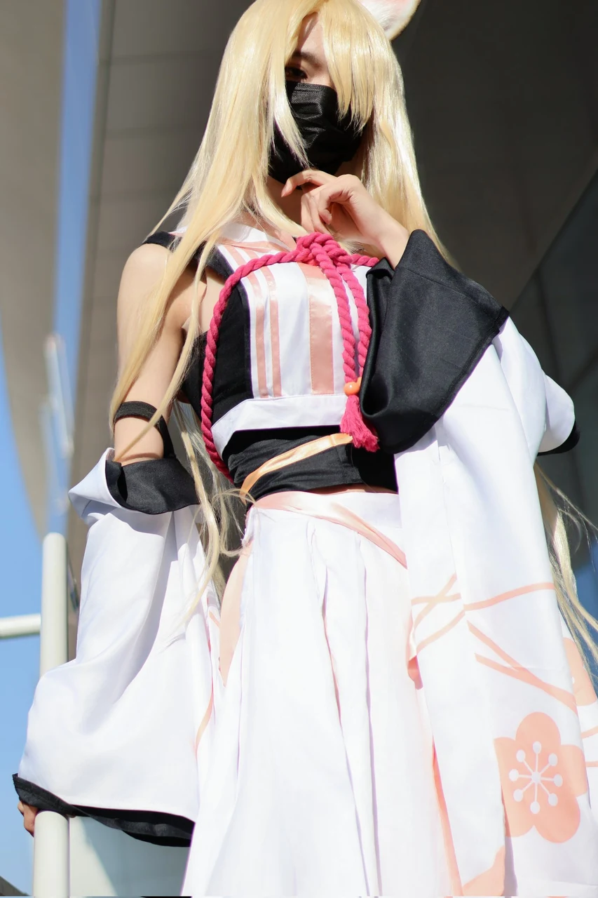
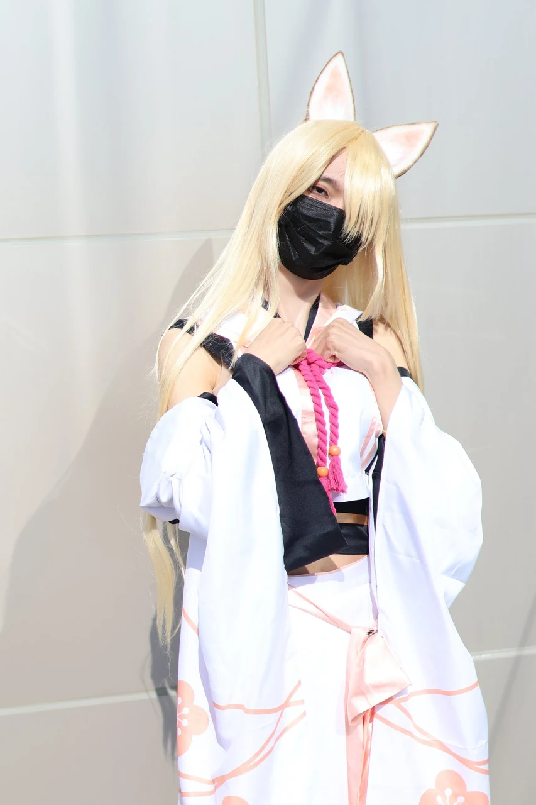
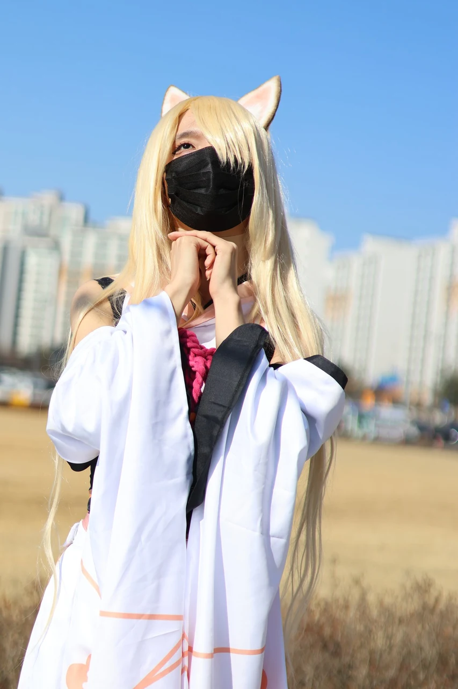
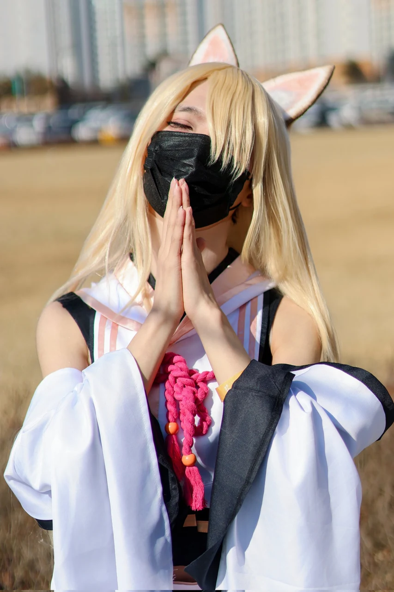

게시 2026-02-04
이번에 청코에서 촬영한 카호 사진이에영!!!너무 예쁘게 찍어주셔서 감사합니당@Patapon_Photo #청코 #청코_𝕏친소 #코스어 #코스프레 #코스어_𝕏친소
모델 정보 미등록
이번에 청코에서 촬영한 카호 사진이에영!!!너무 예쁘게 찍어주셔서 감사합니당@Patapon_Photo #청코 #청코_𝕏친소 #코스어 #코스프레 #코스어_𝕏친소 #블루아카이브
원 게시자: 귀여운 곰둥이 (@aiseuke86916177)
#51 


